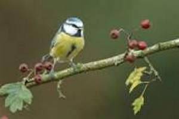

La mésange bleue
C'est la mésange la plus connue et la seule espèce d'Europe qui soit bleue.
Elle est plus petite et plus ronde que la mésange charbonnière, avec un bec plus court.
C'est la mésange la plus connue et la seule espèce d'Europe qui soit bleue.
Elle est plus petite et plus ronde que la mésange charbonnière, avec un bec plus court.
Ce sont de véritables acrobates. Les mésanges bleues recherchent souvent leur nourriture suspendue à de fines branches, c'est pourquoi elles préfèrent les boules ou les anneaux de graisse. Malgré leur taille modeste, elles sont très batailleuses et généralement très agressives et elles n'hésitent pas à chasser de la mangeoire des espèces de même taille qu'elles, telles les mésanges noires ou nonnette. Quelquefois, elles osent même se mesurer à la mésange charbonnière pourtant plus grande. La mésange bleue menace les autres oiseaux en gonflant son plumage, ce qui la fait paraître plus grosse. Elles voyagent en troupes éparses en hiver, se disputant parfois pour se poser sur les distributeurs de graines et de noisettes disposés pour elles. Outre sa formidable capacité, propre à la famille des mésanges, d'ouvrir les graines en martelant leur coque, la mésange bleue se distingue par une autre méthode : elle incise la coque grâce à son bec tranchant et picore la graine morceau par morceau. En marquant des mésanges bleues, on s'est aperçu que plus d'une centaine pouvait se succéder dans un jardin, même si on n'en voit que quelques-unes à un moment donné.
Elles vivent en ville ou dans la campagne et plus longtemps en ville qu'en milieu rural, mais elles y élèvent moins de jeunes car les chenilles y sont plus rares. Elles sont fréquentes dans les bois de feuillus ou mixtes, les parcs et les jardins. On trouve les plus grandes densités dans les forêts de chêne. Elles évitent les forêts de résineux. On ne la trouve pas au-delà de 1500 mètres d'altitude.
Elle est répandue dans toute l'Europe, exceptée dans le Grand Nord.